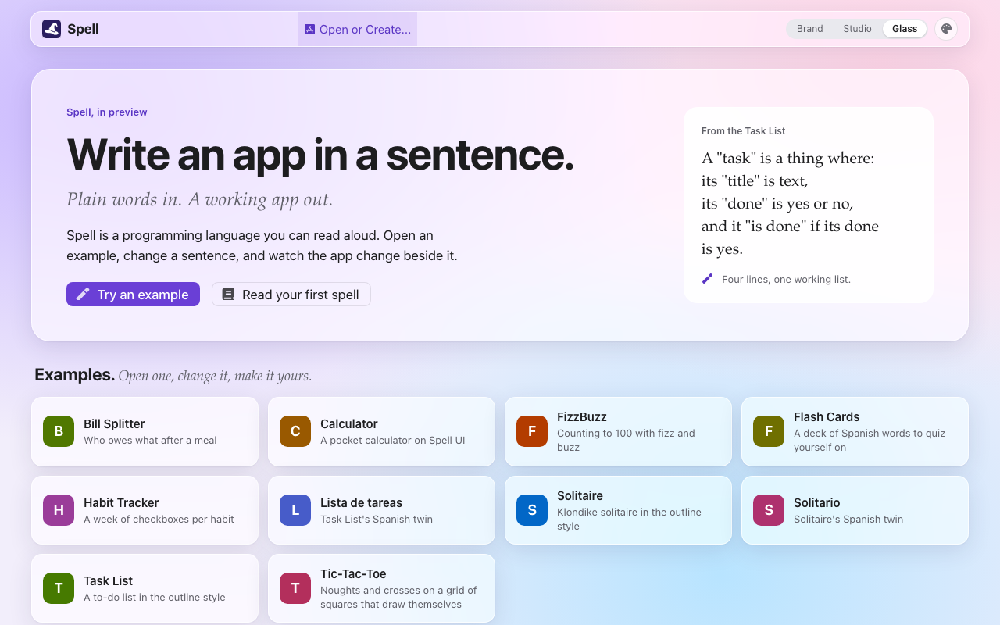
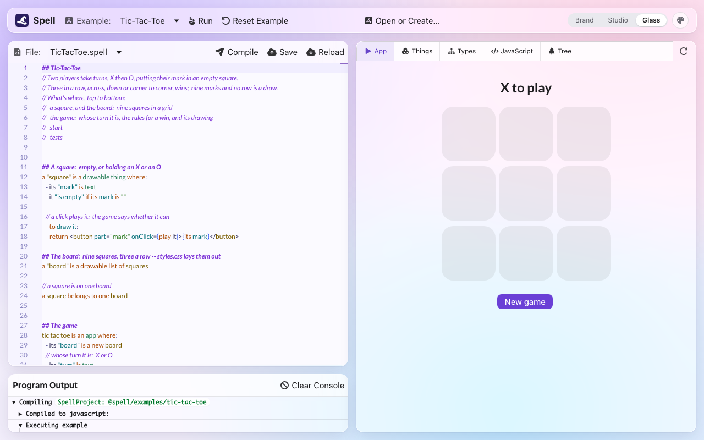

Spell's Public Preview
spell app preview build writes Spell's whole editor into one folder: 2,737 files, 27 MB, the ten
examples and twelve guides inside it, and nothing that needs a server.
Put that folder on any static host, and anyone can open an example, change a sentence and watch the app change, with nothing to install. Their edits stay in their own browser.
main in every repo it
touched, 2026-10-23; built, not deployed anywhere yetdebut, in the kit, spell-parser, spell-ui, spell-epic and spell-appdebut, 2026-10-23, by running the build and the serve command, and looking
at the served preview in a headless browser
-
The preview is the editor itself, built by Vite in a
staticmode: every file it reads comes from the build, every save goes to the visitor's browser, and "Reset Example" forgets them. - It has three looks, Glass (the default), Studio and one in Spell's own colours, each light or dark; the code is always Shades of Purple.
- The right column is one pane of five tabs: the running app, its things, its types, its JavaScript and its Spell tree.
- Ten examples to open, four of them new (Tic-Tac-Toe, Bill Splitter, Flash Cards, Habit Tracker), and the Calculator rebuilt on Spell UI.
- Twelve guides, each a Spell program that reads as prose: change a line where you read it, and the app follows.
-
Spell UI gained two themes,
fruity(macOS glass, in CSS alone) andstudio, and a theme editor,<ui-theme-editor>.
- It builds; nothing deploys it yet, and it must be served at a domain's root.
- The two looks besides Glass were built to their first drawings, with no round of polish.
- A few phrases the examples and guides wanted, Spell doesn't read yet (section 6).
From any folder of the kit, with spell on your PATH:
$ spell app preview build
✓ @spell/examples/bill-splitter up to date
✓ @spell/examples/calculator up to date
...
✓ @spell/guides/how-tic-tac-toe-works up to date
✓ Building the static editor .../spell-app/app/dist-static
@spell/examples: @spell/examples/bill-splitter, @spell/examples/calculator, @spell/examples/fizzbuzz, ...
@spell/guides: @spell/guides/a-first-spell, @spell/guides/a-tour-of-spell, ...
`spell app preview serve` shows it as a host would$ spell app preview serve
http://127.0.0.1:4848/
The static editor (.../spell-app/app/dist-static) is at http://127.0.0.1:4848/ -- Ctrl-C to stop-
buildcompiles the examples and guides where they're out of date, builds the editor, and writes it all intoapp/dist-static/, in spell-app (git-ignored). The run above took 2.6 seconds with every project up to date. -
serveserves that folder as a host would, with no page server, on port 4848, and opens your browser;--portpicks another port,--headlessopens nothing. -
Then: "Try an example", change a sentence, and Run.
- Reload the page: your edit is still there.
- "Reset Example", beside Run, asks, then puts the example back.

The switch at the top bar's right changes the whole editor; the palette button beside it picks light, dark or auto, and any of Spell UI's 28 themes.
| Look | Spell UI theme | What it looks like |
|---|---|---|
| Glass, the default | fruity |
frosted panels over a soft wallpaper, as macOS draws them, in CSS alone |
| Studio | studio |
flat panels on hairlines: Shades of Purple's navy and yellow in dark, lavender and violet in light |
| the third | Spell's own, with warm surfaces | the white cards of Spell's own pages |
- In a look, the top bar floats as a rounded bar with Spell's hat first, and the code, console and app sit in rounded panels with gaps between them. Any other theme brings back the older violet bars.
- The code is Shades of Purple, the VS Code theme, ported to Monaco with a matching light version. It follows the page's light or dark under every theme: there's no separate picker for it.
- Spell's words get their own colours from the parse: headings, keywords, types, properties, actions, constants. Before this, Monaco's semantic colouring wasn't loaded, so none of them showed.
- The editor remembers its own theme, apart from the docs site's; light or dark is ONE choice for every Spell site.
- App: the running program. It keeps running, never redrawn, while another tab shows.
- Things: what the program has made, live, its members named in Spell's words.
- Types: every type the code knows, worked out after each compile by the language service the code editor already runs; a link goes to its line.
- JavaScript and Tree: what it compiled to, and the Spell tree of the cursor's line.
-
Restart and Publish sit at the tab bar's right, whatever tab shows. It's the same pane VS Code's Run
Project panel and
<spell-viewer>use, so all three got tabs that scroll with ‹ › keys in a narrow pane instead of wrapping.
- A hero, "Write an app in a sentence.", with "Try an example" and "Read your first spell", and four lines of the Task List beside it.
- Then cards for the examples, the guides and your own projects, each card its title and the first phrase of its description. An empty group says so in one card, never an empty column.
- Examples and guides both open in the editor, code and app side by side.
| Example | What it shows |
|---|---|
| Calculator, rebuilt | a keypad of Spell UI buttons, four a row, with an = key; its operator keys run its own action, so 7 + 5 makes 12 (it made 82) |
| Tic-Tac-Toe | its win written as eight sentences, one per line of three |
| Bill Splitter | a form of diners and a tip, with sums that follow every keystroke, in dollars and cents |
| Flash Cards | twelve Spanish words, turned over on a click, with a score |
| Habit Tracker | a week of checkboxes per habit, its days done and its streak |
- The other five were already there: FizzBuzz, Task List and Lista de tareas, Solitaire and Solitario.
- All ten are in the examples' compile test: their JavaScript, TypeScript, words and contract snapshots.
- The Run button says Run (Ejecutar in Spanish): "Preview" now names only the public release.
- The full table, with a picture of each: spell-app's README-examples.
## How Tic-Tac-Toe works
// The Tic-Tac-Toe example is the paper game: X and O take turns, and three in a row wins.
// Its rules fit in three ideas:
// - each square knows its own mark, and draws itself as a button
// - the game knows whose turn it is
// - after each move, the game checks every line of three for a winner
//
// This guide is the same game with one thing missing: it only checks the ROWS, across.
// Three down, or corner to corner, doesn't win yet. Adding those is your move, at the end.
A guide is a Spell project like any example: the editor shows its ## headings bold and its
comments in italics, and runs the program between them.
A tutorial page asks you to copy code somewhere else; here you change it where you read it.
- A first walkthrough on a hello sign, five steps, each with a "Your move" and a "What you'll see".
- A tour of Spell: things, properties, rules and drawing, on a windowsill of plants.
- How each example works: FizzBuzz, Calculator, Tic-Tac-Toe, Bill Splitter, Flash Cards, Habit Tracker, Task List and Solitaire; and, in Spanish, Cómo funciona Solitario and Cómo funciona Lista de tareas.
-
Each is 52 to 111 lines, in spell-app's
spaces/@spell/guides/, and tested as the examples are: compiled against snapshots, type-checked, run. A new folder there is picked up by itself.
The editor already read and saved every file through one function, LoadableFile.fetch. The
preview swaps it for
StaticFiles, which answers the page server's URLs from the build:
| The editor asks for | The preview answers with |
|---|---|
| a group's projects | api/projects/list/<group>.json, written at build time |
| a project's index |
api/projects/index/<project>.json, its files' text swapped for the visitor's
edits
|
| a file | the visitor's edit if there is one, else the build's copy |
| a save | kept in localStorage as the visitor types, until Reset Example |
| create, rename, delete, settings | an error saying the preview keeps edits in this browser only |
- What Spell builds from those files (the compiled JavaScript, words, declarations) stays in the page's memory: each visit compiles afresh.
-
Every unknown page goes to the editor, for the hosts that read these:
404.html(GitHub Pages) and_redirects(Netlify, Cloudflare Pages). -
The build:
PreviewSite, behindspell app preview.
-
isStaticBuildin code,:root.spell-staticin CSS, both fromstaticBuild.ts. - It's Vite's mode, fixed at build time, so the code it guards drops out of every other build.
- Gone in the preview: the Projects column, the You panel, About, Help, Publish, Settings, the "..." menus, the console's test buttons, the debug globals.
-
The editor reuses Spell UI's docs palette,
<ui-docs-themes>, and its memory,ThemePreference, under a key of its own:EditorTheme. - Its own colours (the panes, the console, the tree, the explorers) are Spell UI tokens now, so every theme and dark mode reach them.
-
A chosen look sets
<html data-spell-look>, which shapes the chrome: the floating bar, the panels' gaps and corners.
<ui-theme-editor></ui-theme-editor>-
Start from one of Spell UI's themes (
fruitywhen the page has none), and change it: primary, secondary and background colours; heading and body fonts and the text size; corners, depth and, onfruity, how much the glass shows. - A sample habit tracker of real elements shows it, in light and dark side by side.
- The whole page wears the theme while the editor is open, and gets its own back when it leaves.
-
Copy CSS gives only what changed, as tokens on
:rootin@layer ui.app, its first comment naming the base theme to apply first. - "Use this theme" keeps it in the browser; Spell's editor wears it over its base while that look is chosen.
-
Its docs page, live:
/components/ui/ui-theme-editor.htmlon the page server; how to use it: README-themes, recipe 5.
- Edits live in the visitor's browser, with a Reset, over a backend of saved copies: nothing to run, and nobody's edit reaches anyone else.
- Build only, no deploy. The host is still to choose (Cloudflare Pages is the favourite); the build already writes what GitHub Pages, Netlify and Cloudflare Pages read.
-
One hook, not a second editor. Swapping
LoadableFile.fetchkept the preview the same app as the one you develop in; the models' create, rename and delete calls were moved onto the hook so the preview could refuse them in one place. - A save on every keystroke, not on Save: a visitor doesn't know there's a server to save to.
- Purple is the code's colours only. Owen asked for Shades of Purple in Monaco; the page around it keeps its own theme, so the code never fights the chrome.
- Glass is the default, and all three looks ship, because Owen liked all three of the drawings.
- A guide is a Spell file, over a web page with code samples in it: it runs, and it's tested.
- A "how it works" guide is its own small program, the example's key lines copied in, over importing the example: the example can change without breaking its guide, and the guide can leave a piece out for you.
- Copy CSS gives a delta on its base theme, over a whole stand-alone theme: a dozen tokens you can read, rather than four hundred.
- Not deployed anywhere: it builds on your machine.
- It must be served at a domain's root: the editor's routes and files are absolute paths.
-
The glass needs
backdrop-filter; without it the surfaces are still translucent, and still read. - "Open or Create...", Save and Reload are still in the preview's top bar, and read oddly with no server behind them.
- The two looks besides Glass were built to their drawings, with no polish; the look switch is plain buttons, with no arrow keys or sliding thumb; panel toolbars clip at narrow widths, and at phone width the editor overlaps its own top bar.
-
Phrases the examples and guides stepped around, which Spell doesn't read yet:
is at least,a + b as a number, adding up a list, writing money,a random flash card in ...(a type of two words), and, in JSX, the spaces next to a{...}. - The examples' pictures were taken before the facelift.
- No menu entry yet for a theme kept with the theme editor.
| What | Where |
|---|---|
| the commands |
spell app preview build | serve:
previewCommand.ts,
PreviewSite.ts
|
| the preview in the browser |
spell-app/src/app/static/: StaticFiles, isStaticBuild, its CSS
|
| the looks and the code's colours |
EditorTheme.tsx
and its CSS;
monaco/themes/
|
| the right column's tabs |
<EditorTabs> in
SpellEditor.tsx, on
RunnerPane
|
| the home page |
ProjectChooser.tsx
|
| the examples and guides |
spaces/@spell/examples/,
spaces/@spell/guides/
|
| the themes |
fruity.css,
studio.css
|
| the theme editor |
spell-ui/src/components/ui-theme-editor/
|
- P1: three looks drawn as Claude Design boards; Owen picked Glass, and all three as themes (Q10).
- P2: the
fruitytheme, and seven rounds of Owen's notes on Spell UI's docs pages. - P3: the editor's themes, its colours as tokens, Shades of Purple code (Q12-Q14).
- P4: the three looks and the rebuilt home page (Q15).
- P5: the explorers as tabs on the runner pane (Q8).
- P6:
<ui-theme-editor>. - P7: Run, the Calculator, the Errors project set aside (Q4, Q7, Q17).
- P8: four new examples (Q3).
- P9: the read-only build and its command (Q2, Q6, Q16).
- P10: the twelve guides (Q5, Q18).
- P11: the text pass, this guide, the READMEs.